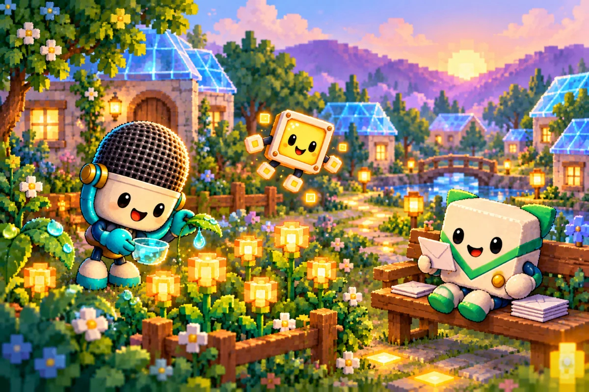

TAJNÝ SVET PIXELKOV
Krajina za sklom
Keď sa ľudský dom začne ukladať na spánok, najskôr v ňom stíchnu veľké veci. V kuchyni prestane cinkať riad. Za oknom pomaly ubúda áut. Na operadle kresla zostane prehodená deka a na stole hrnček, z ktorého už nevystupuje para. Potom niekto vypne televízor. A práve vtedy sa za jeho tmavým sklom rozhostí najkrajší večer.
Ľudia ho nevidia. Obrazovka je pre nich iba obrazovkou a na jej čiernom povrchu sa odráža lampa. Keby však vedeli nazrieť medzi dve posledné svetelné bodky, objavila by sa pred nimi široká kotlina. Po jej svahoch by zostupovali domčeky s priesvitnými strechami a dolu, medzi mäkkými modrými kopcami, by sa vinula rieka tenučká ako strieborná niť.
V ten večer stál na mostíku nad riekou Piko. Mal modrú hlavu podobnú obláčiku, malú svietiacu tvár a trochu nakrivo uviazanú tyrkysovú kravatu. Jeho zápisník bol na dnešný deň už zatvorený. Chvíľu iba pozoroval okná, ktoré sa postupne rozsvecovali na protiľahlom svahu. Poznal každé z nich. Za každým niekto býval. A po všetkých cestách, ktoré sa pred ním rozbiehali, sa dalo prísť domov.
O bodke, ktorá nechcela byť sama
Nebolo to tak odjakživa. Za dávnych čias, keď ešte svetelné cesty nemali mená, ležalo za obrazovkami iba veľké ticho. Raz doň prenikol obraz ranného slnka. Rozsvietil maličkú zlatú bodku a v nej zostalo čosi z jeho tepla aj potom, keď sa obraz zmenil.
Tá bodka sa podľa najstaršej povesti stala prvým Pixelkom. Najskôr vedela iba svietiť. Potom sa naučila urobiť krôčik a neskôr ešte jeden. Keď v diaľke zazrela slabý záblesk, vydala sa k nemu. Cesta trvala dlho, lebo bola malá a svet okolo nej nemal konca. Ale keď konečne dorazila, zistila, že záblesk patrí niekomu, kto je rovnako prekvapený a rovnako rád, že už nie je sám.
Postupne ich pribúdalo. Niektorí sa narodili z farieb, iní z tichých zvukov, ďalší z drobných spojení, po ktorých putovali správy. Preto sa dodnes na seba celkom nepodobajú. Jeden pripomína mikrofón, iný obálku alebo zelený mikročip. Všetci si však z tých dávnych čias uchovali zvláštny zvyk: keď v diaľke uvidia osamelé svetielko, všimnú si ho.
Prvé domčeky postavili blízko seba. Medzi nimi nechali chodníček, po ktorom mohol sused prísť na návštevu. Potom pribudla záhrada, most a námestie. Mesto dostalo meno Jasnov. A okolo neho vyrástla krajina taká pestrá, aké pestré bývajú ľudské sny.
Za záhradnými vrátkami
Piko zišiel z mostíka a vykročil úzkou cestou medzi záhradami. Dláždili ju hladké štvorčeky. Tu a tam na nich zostal zachytený záblesk z posledného ľudského filmu, takže mu pod topánkami raz zažiarila modrá, raz zlatá škvrnka. Nad mestom ešte chvíľu ležalo svetlo mäkké ako med.
Pri prvých vrátkach sa práve zatvárali lampášové kvety. Cez deň mali kalíšky otvorené a zbierali drobné zatúlané iskry. Večer z nich zostávali malé teplé svetielka, pri ktorých bolo vidieť až k ďalšiemu rohu. Pixi, žltý štvorcový Pixelko, medzi nimi poskakovala s maličkou krhličkou. Pri každom kvete sa zastavila o čosi dlhšie. Svojim záhradám venovala rovnakú pozornosť ako značkám na vzdialených cestách.
Na lavičke za plotom sedel Pingy. Jeho svetlé telíčko pripomínalo obálku a zelená čiapka sa mu trochu zosunula nabok. Triedil posledné lístky. Tie, ktoré už doručil, skladal do prázdnej priehradky. Tie, ktoré mohli počkať, nechal na ráno. Dnes už vedel, že nie každá správa sa musí ponáhľať.
O kúsok ďalej Miky opatrne zbieral z lístkov svetelnú rosu. Mal okrúhlu mriežku ako mikrofón a po bokoch slúchadlá, ktorými cez deň zachytával vzdialené signály. Teraz sa nikam nezapočúval. Nad záhradou bolo počuť iba tiché cinknutie kvapky o okraj misky. Piko im pri vrátkach zamával. O chvíľu sa mali všetci stretnúť pri večeri.

Mesto malých každodenností
Za záhradami viedla cesta popri domčekoch. Pixiin bol postavený z priesvitných žltých stien a ráno sa cez ne po dlážke naháňali slnečné štvorčeky. Miky býval v okrúhlom príbytku s mäkkými stenami, medzi ktorými si mohol odpočinúť aj ten najjemnejší zvuk. Pingyho dom stál pri poštovej zastávke. Nad dverami sa mu namiesto zvončeka jemne rozhúpala malá obálka.
Na druhom konci ulice zatváral Plugy svoju dielňu. Bol to svetlý USB konektor so šikovnými rukami a pevnými topánkami. Na stole mu zostali poukladané spoje, každý na svojom mieste. Nič do seba netlačil nasilu. Ak spoj nesedel, otočil ho, prezrel a pokojne skúsil znova. Aj preto bývali jeho mosty také spoľahlivé.
Čipko už čakal pred dverami. Zelený mikročip so zlatými kontaktmi si pod pazuchou niesol zvinutú mapu. Cez deň na nej zakresľoval nové odbočky medzi Medenými terasami. Teraz ju previazal mäkkou stužkou. Poslednú čiaru mohol dokresliť zajtra. Keď Piko prišiel bližšie, obaja sa pridali k nemu a ich kroky sa na štvorcovej dlažbe stretli do jedného pomalého rytmu.
V oknách sa objavovali misky s teplou zlatou kašou. Pixelkovia ju varili zo svetelných omrviniek, ktoré zostávali na okrajoch obrazov. Pri niektorých dverách voňali chrumkavé štvorčeky. Na námestí niekto polieval mladý lampášový strom. Inde sa sušila deka alebo sa z parapetu striasal trblietavý prach. Bolo to mesto celkom obyčajných starostí a práve preto sa doň tak dobre vracalo.
Keď sa vzdialená cesta stíši
Na rázcestí nad námestím sa pred nimi natiahol posledný vzdialený most. Viedol až k obrazovke v inej ľudskej izbe. Dnes už jeho druhý breh sotva žiaril. Kdesi za stenou veľkého sveta sa práve zatvoril notebook a prúd nových správ ustal.
Také chvíle Pixelkovia dobre poznali. Ľudia vypínali počítače, odkladali telefóny a niekedy pri upratovaní vytiahli zariadenie zo zásuvky. Nebolo to nič zlé. V ľudskom byte sa jednoducho skončila práca alebo sa začínal večer. Za obrazovkami sa vtedy niektoré cesty na čas uzavreli. Odkaz, ktorý nestihol prejsť, zostal odpočívať v malej poštovej zastávke.
Občas sa spojenie prerušilo celkom nečakane. V správe sa pomiešali kúsky alebo uprostred mosta prestal svietiť chodník. Vtedy mal každý niečo, čím vedel pomôcť. Miky vylovil správny tón zo šumu, Pingy usporiadal lístky a Čipko s Plugym našli pevné spojenie. Pixi pri práci držala svetlo a Piko dohliadal, aby sa nikto nestratil.
Niekedy im pomohli aj ľudia. Dospelý si všimol, že sa pripojenie prerušilo, a obnovil ho. Detské ruky poskladali roztratený odkaz, ktorý sa zvláštnou náhodou ocitol na papieri. Na malom svete sa vtedy znovu rozžiarila cesta. Ale dnes už nebolo treba nič opravovať. Plugy pri rázcestí iba otočil večernú značku a všetci traja pokračovali smerom k domovu.
Lampáš pri návratovej bráne
Pred spoločným domčekom ešte odbočili k Guardymu. Stál pri návratovej bráne, odkiaľ bolo vidieť na celú kotlinu. Okraj jeho oranžového štítu zachytával posledné svetlo a pod tyrkysovou kravatou mu pokojne žiarila malá kľúčová dierka.
Guardy poznal cesty, ktoré boli bezpečné, aj znamenia tých, čo sa vracali domov. Nad krajinou udržiaval jemné Ochranné pole. Cez deň si ho takmer nikto nevšimol. Za súmraku však vyzeralo ako priesvitná škrupinka, na ktorej sa leskli hviezdy. Ak z neznámeho prúdu prichádzal podivný odkaz, Guardy ho najskôr preskúmal. Kým si nebol istý, nikam sa neponáhľal.
Jeho večernou prácou bolo čakanie. Vedel, že posledný pocestný niekedy prichádza pomalšie než ostatní. Preto pri prahu nechával lampáš. V ten večer sa k nemu postupne pridali aj Miky, Pixi a Pingy. Záhradné vrátka už mali zatvorené, listy uložené a misku s rosou niesli na večeru.
Piko sa obzrel po ceste. Na dlážke stálo sedem párov nôh. Modrý obláčik, malý mikrofón, žltá svetelná bodka, usmievavý konektor, poštová obálka, zelený mikročip a oranžový štít. Nikto nechýbal. Guardy zložil lampáš z háčika. Za nimi sa oblúk brány pomaly zmenil na teplú oranžovú čiaru a potom sa aj tá uložila do ticha.
Všetci doma
V spoločnom domčeku bolo teplo. Na nízkom stole čakali malé hrnčeky a miska zlatých štvorčekov. Pri okne ležalo dosť vankúšov pre každého. Plugy si vyzul topánky, Čipko oprel mapu o stenu a Pingy odložil prázdnu tašku vedľa dverí.
Mikyho slúchadlá tentoraz zostali na poličke. Pixi si sadla tak, aby jej svetlo nikoho neoslňovalo, a pod stolom sa rozlial mäkký žltý odlesk. Guardy si prvý raz za celý deň pokojne natiahol nohy. Piko vzal deku a posunul ju cez vankúše k nemu. Nebolo treba hovoriť veľa. Hrnček sa dal podať aj potichu. Miesto vedľa seba sa dalo urobiť jediným posunutím.
Za oknom stíchlo námestie. Vzdialené kopce stratili farby a zostali iba modrými obrysmi. Na ľudskej strane obrazovky niekto zhasol lampu. Možno ešte prikryl dieťa, ktoré sa v posteli trochu odkopalo. Možno zavrel knižku a na chvíľu položil dlaň na jej obal.
Pixelkovia nepotrebovali, aby kvôli nim zostal zapnutý televízor. Aj oni mali radi noc. Svet sa v nej nestratil, iba odpočíval. Domčeky zostali stáť, uložené odkazy počkali a cesty si pamätali, kam vedú. Ráno ich prvé svetlo nájde presne tam, kde ich večer zanechal.
Pikova svietiaca tvár pomaly zmäkla do dvoch tichých oblúčikov. Vedľa neho sa Miky oprel o vankúš. Čipkove okuliare ležali bezpečne na stolíku a pri Guardyho nohách ešte slabo žiaril lampáš. Vonku sa posledný záhradný kvietok zavrel do malej zlatej bodky.
A potom už v kotline nič nebolo treba dokončiť. Žiadnu mapu. Žiadny most. Žiadnu správu.
Všetci boli doma.
A celý malý svet mohol pokojne zaspať.